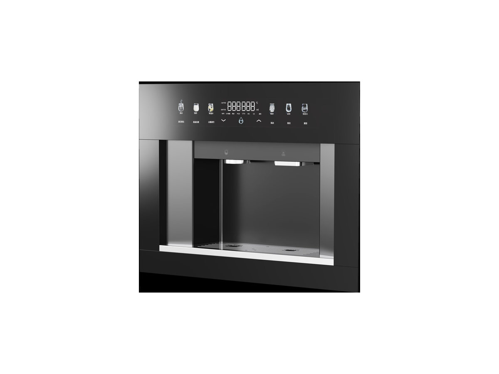

De comptoir
De comptoirRP-C08
Purificateur de comptoir à cartouche tout-en-un
SKU: RP-C08
MOQ : à confirmer lors de la demande
Accueil/Produits/Systèmes de comptoir/ RP-C24

Systèmes de comptoir
Distributeur encastré d'eau froide et chaude (AM2564-H) — trois options. RP-C24 mène la série.
RP-C24 est une famille de distributeurs d'eau froide et chaude encastrés (intégrés) : une unité de 280–325 mm de profondeur qui s'installe à fleur des meubles de cuisine, avec refroidissement par compresseur, chauffage instantané à film épais de 3300 W et stérilisation UV à flux. Trois options partagent la même plateforme et diffèrent par l'écran, la filtration et la production de glace : le distributeur d'eau froide et chaude (grand écran tactile couleur, 6 préréglages de température + 1 réglage personnalisé, 595 × 280 × 450 mm) ; le purificateur à écran TFT (réveil automatique par radar, 1000 G, volume nominal de 5000 L, 595 × 325 × 455 mm) ; et le purificateur de glace en balle (glace en balle de 5 kg/24 h, 1000 G, volume nominal de 4000 L, 595 × 300 × 450 mm). Les spécifications sont confirmées par modèle et par commande.
La tension / fréquence est configurable selon le pays de destination. Les autres configurations sont confirmées par commande.
RP-C24 est une famille de distributeurs d'eau froide et chaude encastrés (intégrés) qui s'installent à fleur des meubles de cuisine avec 280–325 mm de profondeur, avec refroidissement par compresseur, chauffage instantané à film épais de 3300 W et stérilisation UV à flux avec une efficacité déclarée de 99,99 %. Trois options partagent la même plateforme et diffèrent par l'écran, la filtration et la production de glace : le distributeur d'eau froide et chaude, le purificateur à écran TFT et le purificateur de glace en balle.
Quelle est la quantité minimale de commande ?
La première commande est de 200 unités par modèle, et les réassorts sont de 500 unités.
Puis-je commander un échantillon avant une commande en volume ?
Oui. Les échantillons sont prêts en 15 jours, et les frais d'échantillon sont remboursés sur votre première commande en gros. Les commandes en gros prennent 40 jours après approbation de l'échantillon et sont expédiées FOB Shenzhen.
Quelle option dois-je choisir ?
Demandez un devis pour RP-C24 et précisez l'option : distributeur d'eau froide et chaude (grand écran tactile couleur, 6 préréglages de température + 1 réglage personnalisé), purificateur à écran TFT (réveil automatique par radar, 1000 G, volume nominal de 5000 L) ou purificateur de glace en balle (glace en balle de 5 kg/24 h, 1000 G, volume nominal de 4000 L).
Trois options encastrées — coter comme RP-C24 et préciser l'option (distributeur eau froide et chaude, purificateur à écran TFT ou purificateur à glace en balles).
Survolez l'image d'une variante pour voir ses spécifications. Sur écran tactile, touchez une image.


Spécifications complètes de chaque variante, côte à côte. Le tableau de spécifications ci-dessous montre les valeurs de RP-C24.
| Spécification | RP-C24-1 — distributeur d'eau froide et chaude (AM2564-H) | RP-C24-2 — purificateur à écran TFT (AM2564-HD) | RP-C24-3 — purificateur de glace en balle (AM2564-HDI) |
|---|---|---|---|
| Type | Distributeur encastré d'eau froide et chaude | Purificateur encastré d'eau froide et chaude | Purificateur intégré à glace en balles |
| Production de glace | À confirmer par commande | À confirmer par commande | 5 kg/24h (glace en balles de 8 mm, 8 min/cycle) |
| Capacité RO | À confirmer par commande | 1000G | 1000G |
| Production | À confirmer par commande | ≥2.6 L/min | ≥2.6 L/min |
| Volume nominal d'eau purifiée | À confirmer par commande | 5000 L | 4000 L |
| Filtration | À confirmer par commande | 5-en-1 (PP + carbone + RO + post-carbone) | À confirmer par commande |
| Chauffage | 3300W à film épais, 30 L/h (≥90°C) | 3300W à film épais, 30 L/h (≥90°C) | 3300W à film épais, 30 L/h (≥90°C) |
| Refroidissement | Compresseur, 2 L/h (≤10°C) | Compresseur, 2 L/h (≤10°C) | Compresseur, 2 L/h (≤10°C) |
| Écran | Grand écran tactile couleur | Écran tactile TFT, réveil automatique par radar | Écran couleur 18 pouces |
| Dimensions (L×l×H) | 595 × 280 × 450 mm | 595 × 325 × 455 mm | 595 × 300 × 450 mm |
| Stérilisation UV | 99.99% (à circulation) | 99.99% (à circulation) | 99.99% (à circulation) |
| Tension / fréquence | Configurable selon le pays de destination | Configurable selon le pays de destination | Configurable selon le pays de destination |
11 lignes de spécifications du catalogue ROPureOEM.
| Type | Distributeur encastré d'eau froide et chaude |
|---|---|
| Puissance de chauffage | 3300W (chauffage à film épais) |
| Capacité de refroidissement | 2 L/h (≤10°C, refroidissement par compresseur) |
| Sortie d'eau chaude | 30 L/h (≥90°C) |
| Production de glace | À confirmer par commande |
| Volume nominal d'eau purifiée | À confirmer par commande |
| Dimensions (L×l×H) | 595 × 280 × 450 mm |
| Réglages de température | 6 préréglages + 1 personnalisé + production de glace + eau glacée |
| Réglages de volume | 150 / 200 / 300 / 500 mL / illimité |
| Stérilisation UV | 99.99% (à circulation) |
| Tension / fréquence | Configurable selon le pays de destination |
Les spécifications sont tirées du catalogue ROPureOEM. Lorsqu'une valeur n'est pas encore confirmée, elle est indiquée comme « Confirmé par commande » — nous ne publions pas de chiffres non confirmés.
De comptoirPurificateur de comptoir à cartouche tout-en-un
SKU: RP-C08
MOQ : à confirmer lors de la demande
 De comptoir
De comptoirPurificateur RO avec glace, eau chaude et eau froide
SKU: RP-C09
MOQ : à confirmer lors de la demande
 De comptoir
De comptoirRO de comptoir avec refroidissement par compresseur
SKU: RP-C10
MOQ : à confirmer lors de la demande
 De comptoir
De comptoirPurificateur RO au café fraîchement moulu
SKU: RP-C11
MOQ : à confirmer lors de la demande